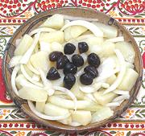

|
Potato & Onion AppetizerBulgaria - Kartofy S Look | ||||
| Serves: Effort: Sched: DoAhead: |
5 app ** 20 min hrs Best |
In Bulgaria this very simple appetizer is usually served with fruit brandies. Yes, it's simple, but, potatoes, how can you go wrong? | |||
|
2 12 ----- 1 2 2 ----- 12 |
# oz --- t T T --- |
Potatoes (1) Onions -- Dressing Salt Wine Vinegar Olive Oil, ExtV -- Garnish Olives, Black (2) |
Make: - (20 min)
|